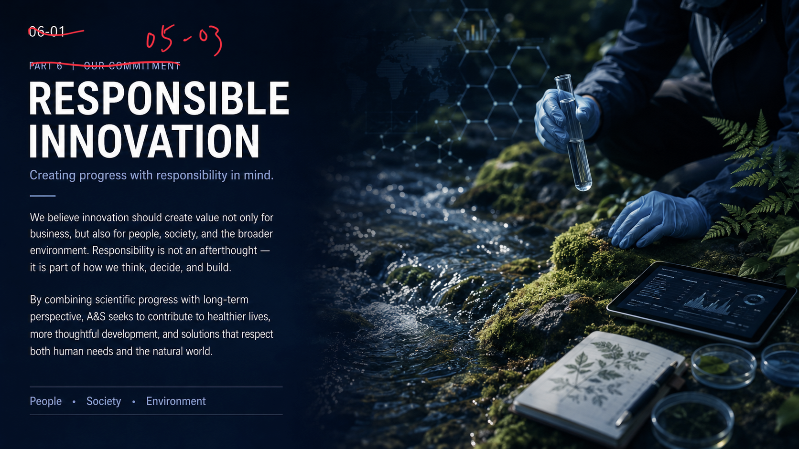
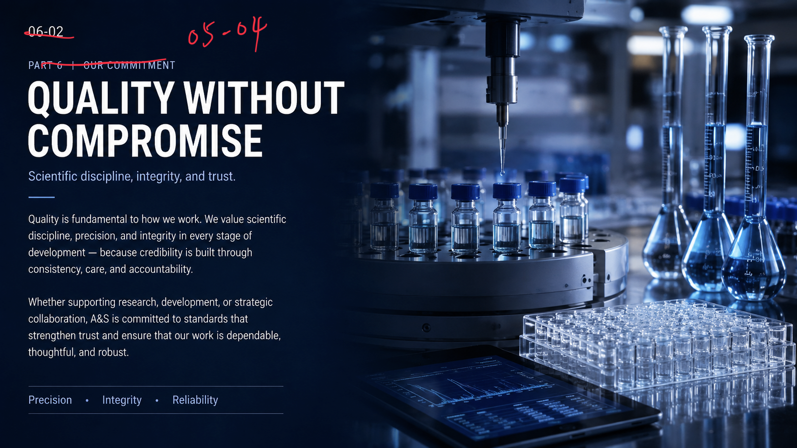
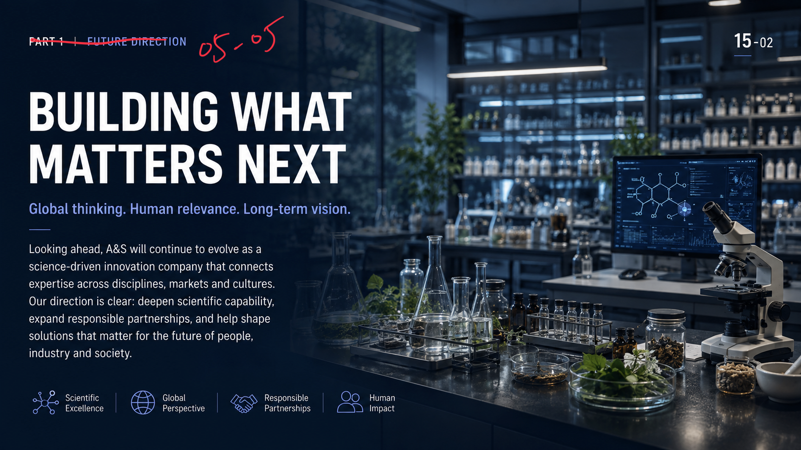
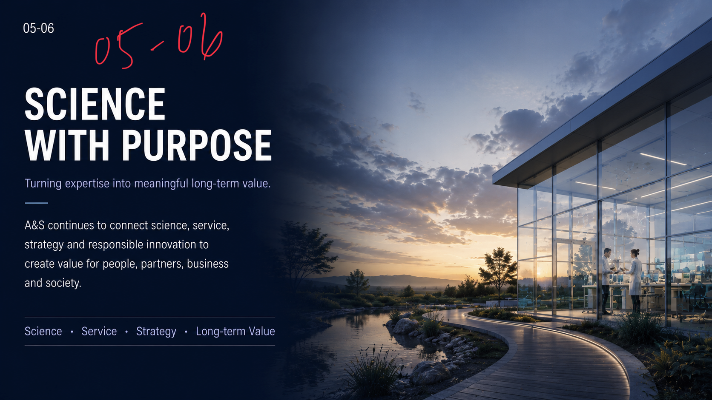

08-01 Leadership
Founder Vision
Science with purpose.
Leadership with long-term vision.
Founded by Yu-Wen Yen, Ph.D., A&S is guided by a belief that meaningful innovation must be both evidence-based and deeply human.
His vision is to build A&S as more than a supplier — a science-driven, service-oriented partner that transforms scientific expertise into practical value for people, business and society.
- Founder
- Scientist
- Sensory Strategist
08-02 Leadership
Scientific Foundation
Multidisciplinary knowledge. Evidence-led leadership.
I founded A&S on the belief that meaningful innovation begins with science—but must ultimately serve people.
My multidisciplinary journey across academic research, applied science and global markets has shaped how we work today: connecting evidence with human experience, and deep expertise with real-world relevance. Through responsible research and thoughtful implementation, we aim to transform scientific insight into solutions that create lasting value.
Yen, Yu-Wen, Ph.D. / Founder · Chief Scientist · Sensory Strategist
03 Leadership, Responsibility & Future
Responsible Innovation
Creating progress with responsibility in mind.
We believe innovation should create value not only for business, but also for people, society, and the broader environment. Responsibility is not an afterthought - it is part of how we think, decide, and build.
By combining scientific progress with long-term perspective, A&S seeks to contribute to healthier lives, more thoughtful development, and solutions that respect both human needs and the natural world.

04 Leadership, Responsibility & Future
Quality Without Compromise
Scientific discipline, integrity, and trust.
Quality is fundamental to how we work. We value scientific discipline, precision, and integrity in every stage of development - because credibility is built through consistency, care, and accountability.
Whether supporting research, development, or strategic collaboration, A&S is committed to standards that strengthen trust and ensure that our work is dependable, thoughtful, and robust.

05 Leadership, Responsibility & Future
Building What Matters Next
Global thinking. Human relevance. Long-term vision.
Looking ahead, A&S will continue to evolve as a science-driven innovation company that connects expertise across disciplines, markets and cultures.
Our direction is clear: deepen scientific capability, expand responsible partnerships, and help shape solutions that matter for the future of people, industry and society.

- Scientific Excellence
- Global Perspective
- Responsible Partnerships
- Human Impact
06 Leadership, Responsibility & Future
Science with Purpose
Turning expertise into meaningful long-term value.
A&S continues to connect science, service, strategy and responsible innovation to create value for people, partners, business and society.
